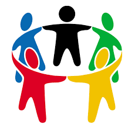

Serving My Community
I plan to serve my community by using my skills to improve the quality of life for those in need. I hope to be able to leave a positive impact on the world with my own two hands no matter how small it may be.
Example #1:
One such way I did this was by joining the 'Apps For Good' program. Together with a group of students we created apps that were designed to create a positive social impact. Though the project itself was somewhat of a smaller scale, I hope that some day in the future I will be able to something much substantial in the same vein as what my team and I accomplished during our time working in that program.